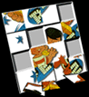
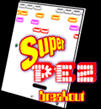

Third, I encourage you to place yourself in the shoes of the creators at the holy PEZ factory in Orange, CT. Here's your chance, your chance to take your hand at creating the PEZ dispenser combinations that you always wished PEZ Candy, Inc. would have come out with. You can have Taz wearing a nurse's outfit and hot pink feet, or Pebbles finally getting her chance to play on the hockey team. You may not have ever had the privilage of dressing your PEZ dispensers with the various body parts...but now you too, can Create Your Own Dispenser!
Third, I encourage you to place yourself in the shoes of the creators at the holy PEZ factory in Orange, CT. Here's your chance, your chance to take your hand at creating the PEZ dispenser combinations that you always wished PEZ Candy, Inc. would have come out with. You can have Taz wearing a nurse's outfit and hot pink feet, or Pebbles finally getting her chance to play on the hockey team. You may not have ever had the privilage of dressing your PEZ dispensers with the various body parts...but now you too, can Create Your Own Dispenser!

All other material ©2000, Jamie Gerdes. Any information or opinions expressed
herein can be blamed on the senseless actions of a PEZ addict.
 PEZ Polling Booth Here's your chance to let the world (and hopefully PEZ Candy, Inc.) know what you really think about the dispensers made. Vote for your favorite or ugliest dispensers. Or which do you carry with you? What should they make next? Vote now!  If you need a Windows 3.1 version, email me.  |